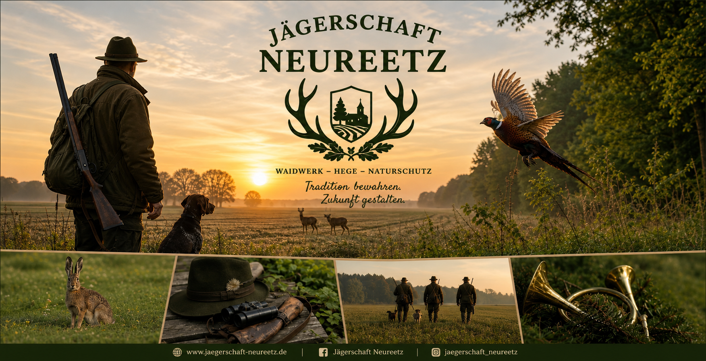

🦌
Wildgerechte Hege
Wir setzen auf einen verantwortungsvollen Umgang mit dem Wild und eine nachhaltige Bewirtschaftung des Reviers.

WAIDWERK · HEGE · NATURSCHUTZ
Verbunden mit unserer Landschaft, verantwortlich für Wild und Natur.
Jägerschaft Neureetz
Die Jägerschaft Neureetz steht für verantwortungsvolles Waidwerk, nachhaltige Hege und aktiven Naturschutz. Wir verstehen Jagd als Teil einer intakten Kulturlandschaft und tragen Verantwortung für Wild, Wald, Feld und Lebensräume.
Unser Revier liegt im Raum Oderaue. Im Mittelpunkt stehen ein respektvoller Umgang mit der Natur, die Pflege von Lebensräumen und ein verantwortungsbewusster Umgang mit dem Wildbestand.
Jagd & Hege
Wir setzen auf einen verantwortungsvollen Umgang mit dem Wild und eine nachhaltige Bewirtschaftung des Reviers.
Feld, Wald, Hecken und Gewässer sind wichtige Lebensräume. Ihr Erhalt kommt Wild, Vögeln und vielen anderen Arten zugute.
Respekt vor dem Tier, Sicherheit und ein verantwortungsvolles Handeln gehören für uns untrennbar zusammen.
Naturschutz
Jagd und Naturschutz können gemeinsam einen wichtigen Beitrag zum Erhalt unserer heimischen Artenvielfalt leisten. Deshalb gehört die Pflege von Biotopen und Lebensräumen ebenso zu unserem Selbstverständnis wie die Beobachtung der heimischen Tierwelt.
Aktuelles
Ob Revierarbeiten, Hegetermine, Veranstaltungen oder weitere Aktivitäten – aktuelle Termine können hier ergänzt werden.
Kontakt
Jagdpächter Tobias Kentel
Wriezener Str. 8
16259 Oderaue